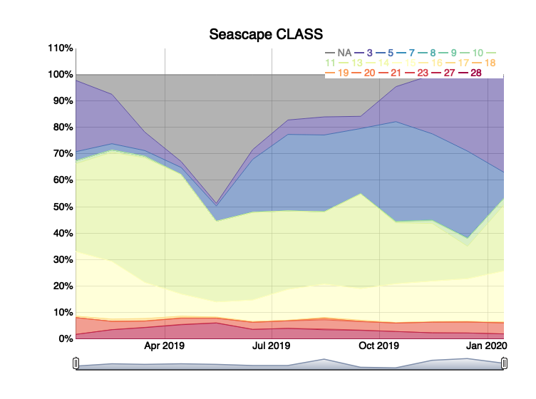

The seascapeR package provides functions for fetching, analyzing and visualizing Seascapes, a global and regional sea water classification product derived from satellite imagery by Maria Kavanaugh (OSU) and MarineBON.org.
Install
remotes::install_github("marinebon/seascapeR")Use
Load the library and map Seascape classes using a web map server (wms) that loads image tiles (not data) interactively (zoom, pan) from R.
library(seascapeR)
map_seascape_wms("2020-11-15", ctr_lon = -81.3, ctr_lat = 24.5, ctr_dd = 10)
Get Seascape data for a year and plot Seascape classes over time.
r_mo_2019 <- get_seascape_data(
ctr_lon = -81.3, ctr_lat = 24.5, ctr_dd = 10,
dataset = "global_monthly", var = "CLASS",
date_beg = "2019-01-01", date_end = "2020-01-01")
#> info() output passed to x; setting base url to: https://cwcgom.aoml.noaa.gov/erddap/
# here's the raster stack
r_mo_2019
#> class : RasterStack
#> dimensions : 401, 401, 160801, 13 (nrow, ncol, ncell, nlayers)
#> resolution : 0.05, 0.05 (x, y)
#> extent : -91.35, -71.3, 14.5, 34.55 (xmin, xmax, ymin, ymax)
#> crs : +proj=longlat +datum=WGS84 +no_defs
#> names : CLASS_2019.01.15, CLASS_2019.02.15, CLASS_2019.03.15, CLASS_2019.04.15, CLASS_2019.05.15, CLASS_2019.06.15, CLASS_2019.07.15, CLASS_2019.08.15, CLASS_2019.09.15, CLASS_2019.10.15, CLASS_2019.11.15, CLASS_2019.12.15, CLASS_2020.01.15
#> min values : 3, 3, 3, 3, 3, 3, 3, 3, 3, 3, 3, 3, 3
#> max values : 27, 28, 28, 28, 28, 28, 27, 28, 28, 28, 27, 27, 27
# map the first layer
map_seascape_raster(
raster::raster(r_mo_2019, 1))
# plot the whole time series
plot_seascape_ts(r_mo_2019, show_legend = "always")
Note that when you run the code above in any of these R environments, you get an interactive visualization:
The interactive map allows you to zoom and pan. The time series has sliders to change the time window and hover over to get values.
For more on how to use the seascapeR functions and view these interactive visualizations, see the Getting Started article.
For more on how to contribute to seascapeR package development, see CONTRIBUTE.md.